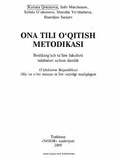

OTBoshlang'ich sinflarda ona tili o'qitishning nazariy va amaliy metodikasi bo'yicha darslik.
Mazkur darslik boshlang'ich sinf o'quvchilariga ona tilini o'qitishning nazariy va amaliy asoslarini yoritib beradi. Unda savod o'rgatish, o'qish, grammatika, imlo va nutq o'stirish metodikasi zamonaviy ta'lim talablari asosida tushuntirilgan.